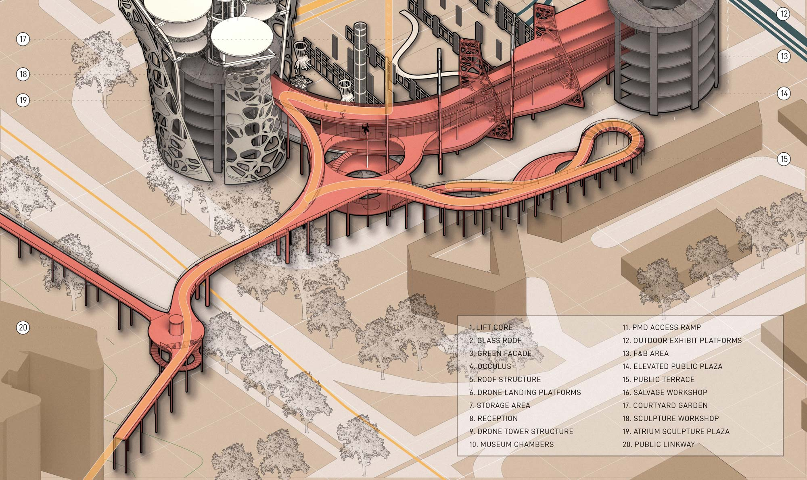
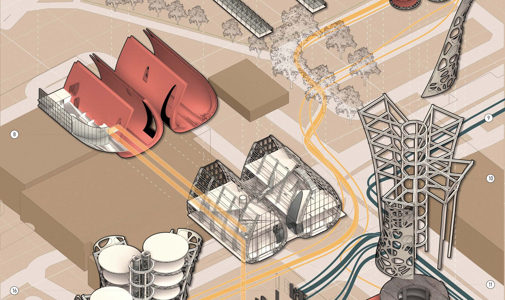
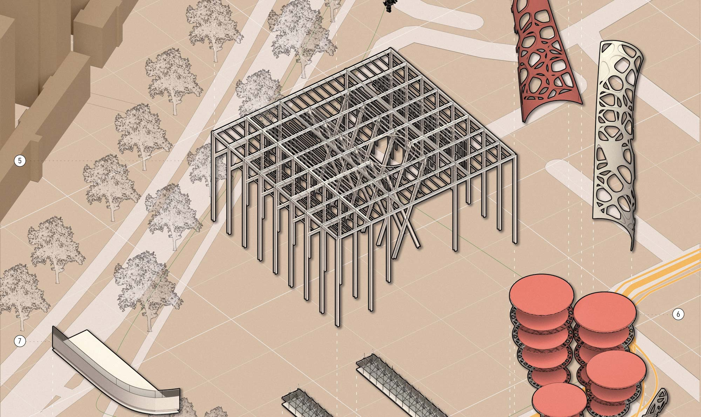
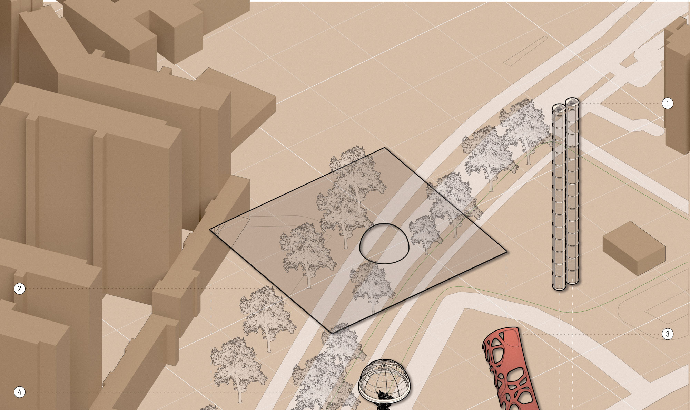
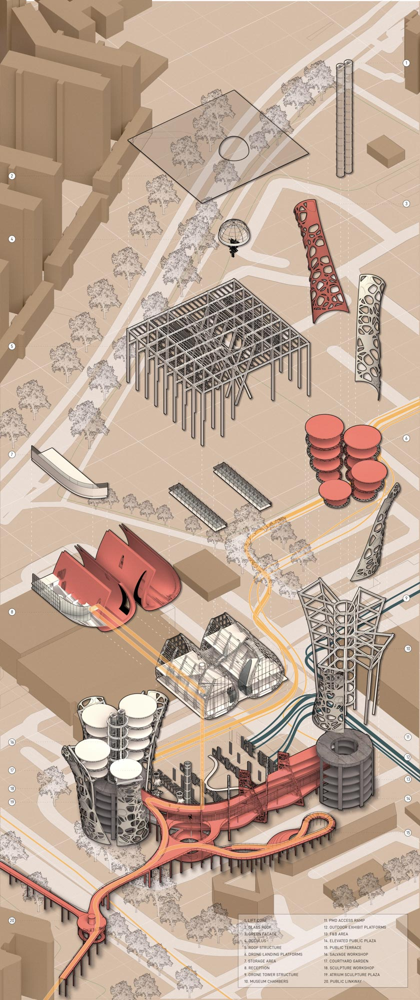

<div class="aki-content-wrapper" >
  <div class="aki-contentL" style="flex: 2;">

    <div class="banner-wrapper">
      <div class="title-left" >

        <b>Circulation and Tectonics</b>
      </div>
    </div>

    

    <div id="slide-wrapper">
      
      
      
      

    </div>
  </div>

  <div class="aki-contentR" style="flex: 1;">
    
    

  </div>
  
</div>